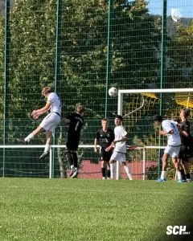
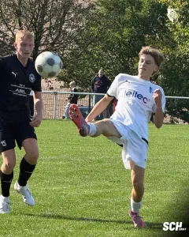
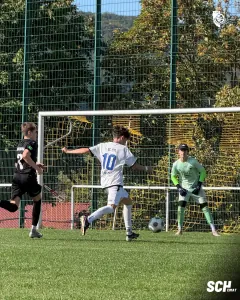
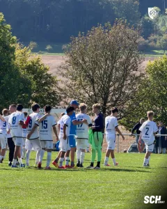

<!doctype html><html lang="de"><head><meta charset="utf-8"><meta name="robots" content="noindex"><meta name="viewport" content="width=device-width, initial-scale=1"><title>Auswärtssieg der U16 · 1. SC 1911 Heiligenstadt</title><link rel="icon" type="image/png" sizes="32x32" href="../favicon-32.png"><link rel="icon" type="image/png" sizes="192x192" href="../icon-192.png"><link rel="apple-touch-icon" href="../apple-touch-icon.png"><meta name="theme-color" content="#1b2d4f"><meta name="description" content="Drei Punkte, fünf eigene Treffer und eine Leistung, mit der das Trainerteam zufrieden sein konnte: Unsere B2-Junioren haben ihr Auswärtsspiel bei der DJK SV …"><meta property="og:type" content="website"><meta property="og:site_name" content="1. SC 1911 Heiligenstadt"><meta property="og:locale" content="de_DE"><meta property="og:title" content="Auswärtssieg der U16 · 1. SC 1911 Heiligenstadt"><meta property="og:description" content="Drei Punkte, fünf eigene Treffer und eine Leistung, mit der das Trainerteam zufrieden sein konnte: Unsere B2-Junioren haben ihr Auswärtsspiel bei der DJK SV …"><meta property="og:url" content="https://tecko1985.github.io/sch-website/seiten/beitrag-auswaertssieg-der-u16.html"><meta property="og:image" content="https://tecko1985.github.io/sch-website/assets/seiten/212a2d3124715a.webp"><meta name="twitter:card" content="summary_large_image"><link rel="stylesheet" href="../sch-startseite/assets/report.css"><link rel="stylesheet" href="../updates.css"><link rel="stylesheet" href="../offline.css?v=4"><link rel="stylesheet" href="../seiten.css?v=2"></head><body><div class="offline-bar"><span>Offline-Version · 06.10.2026</span><nav aria-label="Offline-Seiten"><a href="../index.html">Startseite</a><a href="../spielbericht-erfurt.html">Spielbericht</a></nav></div><nav class="sch-reportnav sp-nav" aria-label="Hauptmenü"><a href="../index.html"><span>1. SC 1911 HEILIGENSTADT</span></a><div><a href="news.html">News</a><a href="termine.html">Termine</a><a href="fussball.html">Fußball</a><a href="verein.html">Verein</a><a href="nachwuchs.html">Nachwuchs</a><a href="sponsoren.html">Partner</a></div></nav><main class="sch-report sp-seite"><div class="sch-reporthero sp-held"><div><span>News</span><h1>Auswärtssieg der U16</h1><p class="sp-datum">28.09.2026</p></div></div><article class="sp-inhalt">
<h3>Doppelschlag vor der Pause, fünf Tore auswärts: Unsere U16 überzeugt in Gerbershausen</h3>
<p>Drei Punkte, fünf eigene Treffer und eine Leistung, mit der das Trainerteam zufrieden sein konnte: Unsere B2-Junioren haben ihr Auswärtsspiel bei der DJK SV Arenshausen mit 5:1 (2:0) gewonnen. Auf dem Sportplatz in Gerbershausen zeigte die Mannschaft von Carmine Periello und Andreas Weber am Sonntag eine kontrollierte Partie. Auch der zwischenzeitliche Anschlusstreffer brachte die Blau-Weißen nicht entscheidend aus dem Konzept. Yussof Silfani erzielte drei Tore, Nino Arendt und Adrian Schneider trafen jeweils einmal.</p>
<h3>Spielkontrolle und ein stabiler Rückhalt</h3>
<p>Bei bestem Sonntagswetter bestimmte der SCH früh das Geschehen. Unsere U16 ließ den Ball durch die eigenen Reihen laufen und verband ihr Angriffsspiel mit einer kompakten Ordnung gegen den Ball. Für die Gastgeber blieben dadurch nur wenige Räume, um selbst gefährlich zu werden. Nennenswerte Großchancen konnte sich die DJK kaum erarbeiten. Diese defensive Stabilität bildete die Grundlage für den Auswärtserfolg. Die Mannschaft musste sich ihre Überlegenheit nicht durch ein offenes Spiel erkaufen, sondern behielt auch bei eigenen Angriffen die nötige Absicherung. Vorne gelangen flüssige Kombinationen, hinten blieb das Team geschlossen. Zunächst fehlte allerdings noch der Treffer, der diese Spielkontrolle auch im Ergebnis sichtbar machte.</p>
<h3>Zwei Treffer kurz vor dem Seitenwechsel</h3>
<p>Geduld war deshalb gefragt. Trotz des kontrollierten Auftritts stand es bis in die Schlussminuten der ersten Halbzeit hinein 0:0. Erst in der 36. Minute brachte Yussof Silfani unsere B2 in Führung. Der erste Torerfolg gab der bis dahin geleisteten Arbeit den verdienten Ertrag. Nur drei Minuten später legte Nino Arendt nach. Sein Treffer zum 0:2 in der 39. Minute sorgte unmittelbar vor der Pause für einen deutlich angenehmeren Zwischenstand. Aus einer knappen Führung war innerhalb kurzer Zeit ein Vorsprung von zwei Toren geworden. Mit diesem Doppelschlag nahm der SCH eine gute Ausgangsposition mit in die zweite Hälfte. Gerade der Zeitpunkt machte diese beiden Treffer wertvoll. Lange hatte unsere Mannschaft auf das erste Tor warten müssen, nun ging sie mit einem Ergebnis in die Pause, das zu ihrem Auftritt passte. Die Gastgeber hingegen mussten nach dem Seitenwechsel zwei Tore aufholen.</p>
<h3>Arenshausen verkürzt, der SCH bleibt bei seinem Spiel</h3>
<p>Ganz ohne Gegentor ging es dennoch nicht durch diesen Vormittag. Johannes Ringleb verkürzte in der 50. Minute auf 1:2. Damit war die DJK im Ergebnis wieder näher herangerückt. Ein weiterer Treffer hätte den Ausgleich bedeutet, die Partie war zu diesem Zeitpunkt noch nicht entschieden. Unsere U16 behielt jedoch ihre insgesamt stabile Spielweise bei. Der Anschlusstreffer blieb der einzige Torerfolg der Gastgeber. Arenshausen gelang es nicht, daraus eine Wende zu machen. Die Blau-Weißen hielten an ihrer kontrollierten Vorstellung fest und fanden im weiteren Verlauf auch offensiv wieder die passende Antwort. In der 64. Minute stellte Silfani mit seinem zweiten Treffer den alten Abstand her. Das 1:3 war ein wichtiger Moment: Nach der Phase mit nur einem Tor Vorsprung hatte der SCH wieder etwas mehr Sicherheit auf seiner Seite. Zugleich belohnte sich die Mannschaft dafür, nach dem Gegentor weiter an ihrem Spiel festgehalten zu haben.</p>
<h3>Kruse gibt dem Angriff wichtige Impulse</h3>
<p>Einen wesentlichen Anteil am gelungenen Offensivspiel hatte Oskar Kruse. Er brachte die Angriffe immer wieder in Gang und bereitete mehrere Treffer vor. Seine Vorarbeit gehörte zu den auffälligen Leistungen dieses Auswärtsspiels.<br> So standen hinter den fünf Toren nicht allein die jeweiligen Abschlüsse. Das Zusammenspiel und die Vorbereitung der Angriffe trugen ebenso zum Ergebnis bei. Kruse setzte dabei wichtige Akzente, während seine Mitspieler die Angriffe erfolgreich vollendeten. Diese Verbindung aus Vorarbeit und Torabschluss machte sich besonders im weiteren Verlauf der zweiten Hälfte bezahlt.</p>
<h3>Schneider und Silfani machen den Sieg deutlich</h3>
<p>Mit dem 1:3 war das letzte Wort noch nicht gesprochen. Adrian Schneider erhöhte in der 75. Minute auf 1:4 und sorgte damit kurz vor Schluss für klare Verhältnisse. Der Vorsprung war nun deutlich, die drei Auswärtspunkte greifbar.<br> Den Schlusspunkt setzte erneut Silfani. In der 80. Minute traf er zum 1:5 und machte seinen Dreierpack vollständig. Nach den beiden Toren unmittelbar vor der Pause hatte unsere Mannschaft damit auch die Schlussphase erfolgreich genutzt. Aus dem zwischenzeitlich knappen Spielstand wurde ein klarer Auswärtssieg.</p>
<h3>Zufriedenheit über Ergebnis und Spielweise</h3>
<p>Nach dem Abpfiff fiel das Fazit von Carmine Periello und Andreas Weber positiv aus. Das Trainerteam war sowohl mit der Leistung als auch mit der Spielweise der Jungs zufrieden. Der SCH hatte sich den Erfolg mit einer kompakten Defensive und gelungenem Zusammenspiel verdient. Das Gegentor blieb der kleine Makel eines ansonsten überzeugenden Auftritts. Als nächstes Punktspiel ist das Heimspiel gegen den SV Blau-Weiß Brehme am Sonntag, 4. Oktober, um 12:30 Uhr auf dem Sportplatz Stelzenberg angesetzt. Dorthin nimmt unsere B2 drei verdiente Auswärtspunkte und die Bestätigung mit, dass ihr gemeinsames Spiel in Gerbershausen gut funktioniert hat.</p>
<p>Spieldaten<br> DJK SV Arenshausen – 1. SC 1911 Heiligenstadt U16 1:5 (0:2)</p>
<p>DJK SV Arenshausen<br> Becker – Römer – Hey – Raub – Wolf – Siebert – Ringleb – Teupel – Gölitz – Klöppner – Sommer</p>
<p>SC Heiligenstadt: Olschner – Kopach – Hildebrandt – Herwig – Arendt – Silfani – Kruse – Boehm – Khosrawi – Drößler – Schneider</p>
<p>Schiedsrichter<br> Wagner</p>
<p>Tore:<br> 0:1 Silfani (36.), 0:2 Arendt (39.), 1:2 Ringleb (50.), 1:3 Silfani (64.), 1:4 Schneider (75.), 1:5 Silfani (80.)</p>
<div class="sp-galerie"></div>
<p class="sch-source-note">Quelle: <a href="https://www.sc1911-heiligenstadt.de/2026/09/28/auswaertssieg-der-u16/"></a> · Stand 06.10.2026</p></article></main><footer class="sch-footer" id="kontakt"><div class="sch-footergrid"><div><h3>Kontakt</h3><p><strong>1.SC1911 Heiligenstadt</strong></p><p>Leineberg 2<br>37308 Heilbad Heiligenstadt<br>Tel.: <a href="tel:+493606612206">03606 612206</a></p><p>Mail: <a href="mailto:info@sc1911-heiligenstadt.de">info@sc1911-heiligenstadt.de</a></p><p>Bürozeiten:</p><p>Di. &amp; Do.: 17.00 Uhr – 19.00 Uhr<br>sowie nach telefonischer Vereinbarung</p></div><div><table aria-label="Vereinsvorstand"><tbody><tr><td>Präsident:</td><td>Thadäus König</td></tr><tr><td>Vizepräsidenten:</td><td>Manuel Lubojanski<br>Christoph Rodenstock</td></tr><tr><td>Schatzmeister:</td><td>Sebastian Möhlhenrich</td></tr><tr><td>Vorstand Kommunikation &amp; Medien</td><td>Michael Apel</td></tr><tr><td>Geschäftsstellenleiter:</td><td>Uwe Meinold</td></tr></tbody></table></div><div><p>SC HEILIGENSTADT AUF SOCIAL MEDIA</p><div class="sch-footericons"><a href="https://www.facebook.com/1-SC-1911-Heiligenstadt-News-443349765710542/" aria-label="Facebook"></a><a href="https://www.instagram.com/sc1911heiligenstadt/" aria-label="Instagram"></a><span class="sch-wa-placeholder" title="Kanallink folgt">WhatsApp-Kanal</span></div></div></div><div class="sch-socket"><span>© Copyright - 1. SC 1911 Heiligenstadt</span><span><a href="https://www.sc1911-heiligenstadt.de/impressum-2/">Impressum</a> · <a href="https://www.sc1911-heiligenstadt.de/datenschutz/">Datenschutz</a></span></div></footer></body></html>